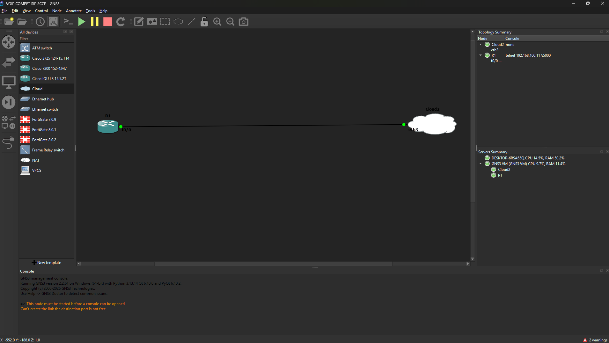
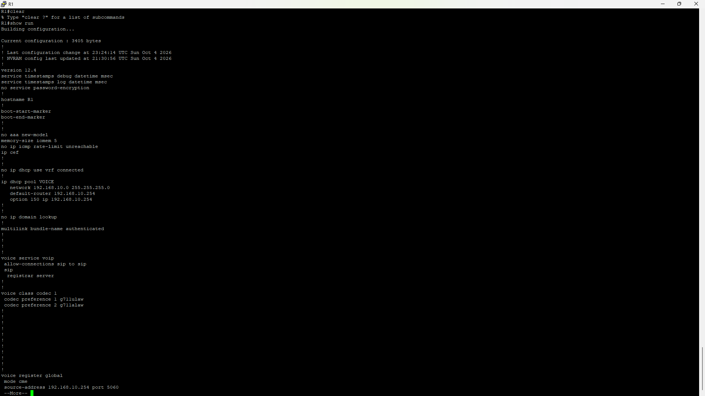
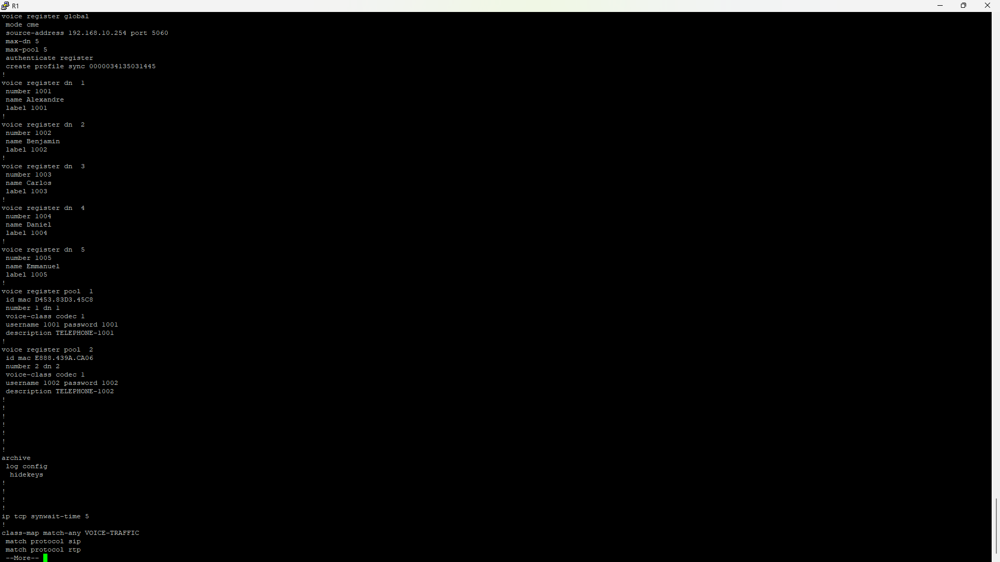
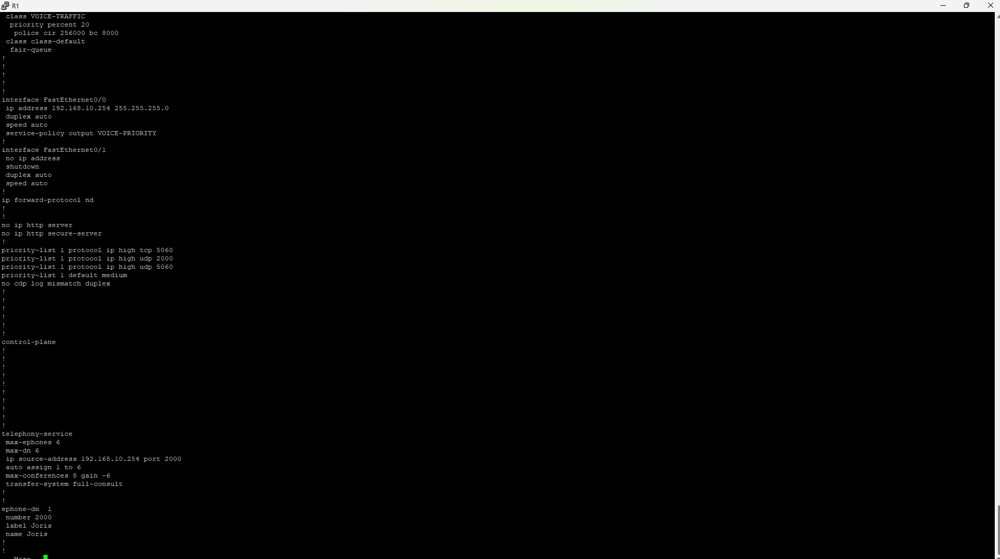
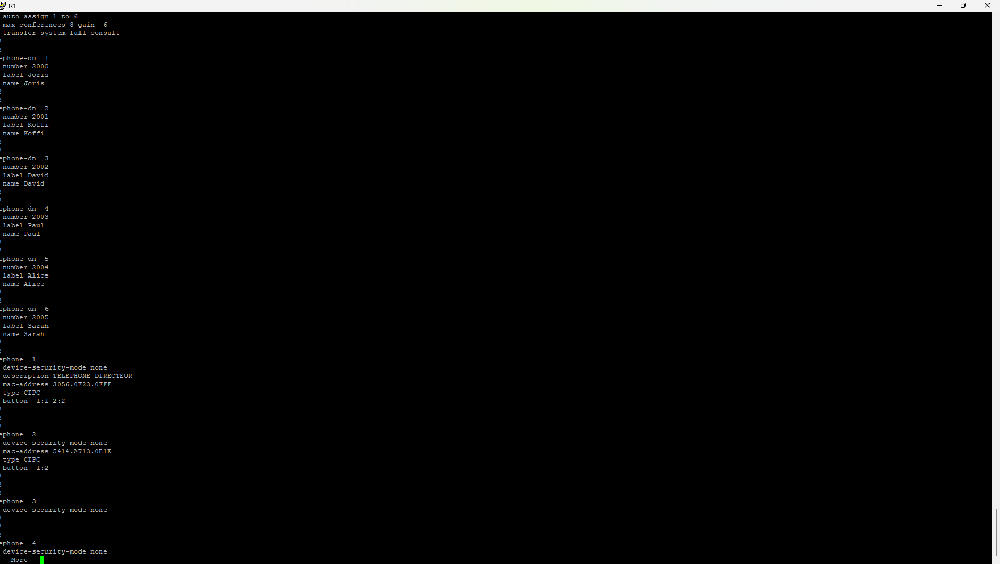
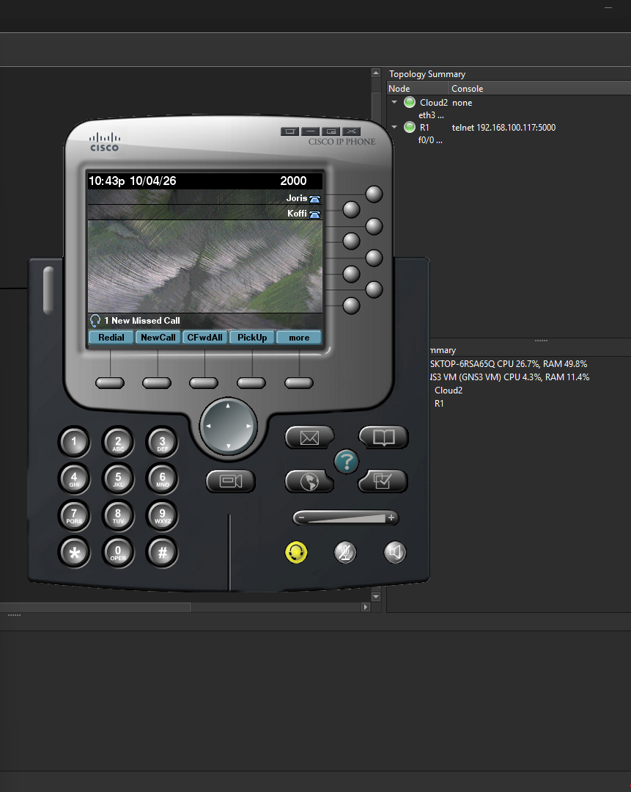
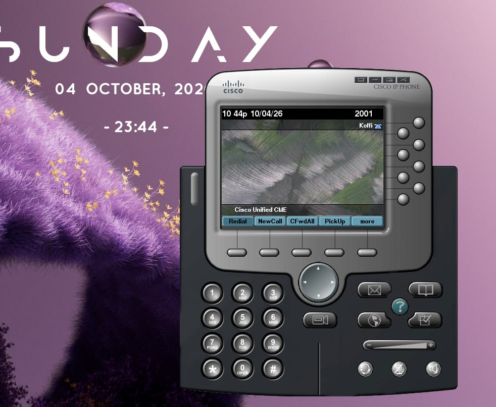

Déploiement d’une Infrastructure VoIP Hybride Cisco CME (SCCP & SIP) en Environnement Virtualisé
Présentation rapide
Ce projet d'infrastructure réseau et télécom porte sur la conception, l'interconnexion et la configuration d'une plateforme VoIP centralisée sur un routeur Cisco 3725 exécutant Cisco CallManager Express (CME). L'architecture prend en charge un ensemble mixte de terminaux clients utilisant deux protocoles de signalisation distincts : SCCP (Skinny Client Control Protocol) et SIP (Session Initiation Protocol).
Le laboratoire porte également sur l'intégration d'un réseau virtuel hébergé sous GNS3 à un sous-réseau physique Wi-Fi/LAN, afin de permettre à des terminaux mobiles réels — des smartphones Android exécutant Linphone — de s'enregistrer auprès du Registrar SIP du routeur d'infrastructure.
Fiche technique
| Composant | Technologie / modèle | Rôle dans l’architecture |
|---|---|---|
| Cœur de réseau VoIP | Cisco 3725 (Cisco IOS) | Routeur, serveur DHCP, CME (SCCP), registrar SIP |
| Hyperviseur réseau | GNS3 | Virtualisation du routeur et routage d’E/S |
| Pont physique / virtuel | Cloud GNS3 / NIC Ethernet | Bridging de la carte réseau du PC hôte |
| Accès sans fil | Routeur MTN (mode Bridge/AP) | Point d’accès de couche 2 pour la connectivité Wi-Fi |
| Terminaux SIP | Android / client Linphone | Softphones SIP enregistrés sur le CME |
| Terminaux SCCP | IP Phones Cisco (émulés / CME) | Téléphones IP SCCP provisionnés dynamiquement |
Contexte & Problématique
Contexte
Dans le cadre d'une évolution des infrastructures d'entreprise vers des télécommunications unifiées, l'intégration de flottes de téléphones IP hétérogènes (postes fixes propriétaires SCCP et softphones mobiles standards SIP) est un enjeu majeur. L'objectif était de monter un banc d'essai complet simulant un site d'entreprise autonome gérant sa téléphonie interne sans matériel dédié
Problématique d'Ingénierie
"Comment concevoir et déployer, au sein d'une infrastructure virtualisée interconnectée à un segment physique, un cœur de téléphonie IP unifié sous Cisco CME capable de provisionner, d'enregistrer et de faire communiquer simultanément des terminaux propriétaires SCCP et open-standard SIP, tout en garantissant l'adressage automatique et la priorisation du flux de voix sans matériel dédié ?"
01 — Déploiement de l'infrastructure cœur
La première étape consiste à préparer le routeur Cisco 3725 en configurant son horloge système (essentiel pour la synchronisation des journaux et des paquets de téléphonie), l'interface réseau Layer 3 et le pool DHCP supportant l'option vendor spécifique VoIP.

Routeur Cisco 3725 dans GNS3 : Sur l’image on peut apercevoir le routeur Cisco 3725 connecté via le cloud à la carte physique ETHERNET de l’ordinateur.
Router# ! Réglage de l'horloge système
Router# clock set 21:25:00 oct 4 2026
Router# configure terminal
Router(config)# ! Configuration de l'interface LAN
Router(config)# interface FastEthernet0/0
Router(config-if)# ip address 192.168.10.254 255.255.255.0
Router(config-if)# no shutdown
Router(config-if)# exit
Router(config)# ! Configuration du serveur DHCP avec l'Option 150 (TFTP / CME Server)
Router(config)# ip dhcp pool VOICE
Router(dhcp-config)# network 192.168.10.0 255.255.255.0
Router(dhcp-config)# default-router 192.168.10.254
Router(dhcp-config)# option 150 ip 192.168.10.254
Router(dhcp-config)# exit
02 — Mise en œuvre du protocole SCCP (Skinny)
Concept & Mécanique SCCP
SCCP (Skinny Client Control Protocol) est un protocole propriétaire Cisco, orienté stimulus. Le téléphone IP SCCP est un terminal "simplifié" (dumb terminal) : toute la logique de traitement d'appel, l'état des lignes, le rafraîchissement des écrans et les tonalités sont générés par le routeur CME.
- Procédure de Boot SCCP :
- Le téléphone obtient son IP et l'IP du serveur TFTP/CME via l'Option DHCP 150.
- Le téléphone contacte le CME sur le port TCP 2000.
- Le CME télécharge dynamiquement au téléphone son fichier de configuration généré par la commande
create cnf-files.
- Distinction ephone-dn vs ephone :
ephone-dn(Directory Number) : Représente le concept logiciel du numéro de téléphone/de la ligne (ex: numéro2000, nom associatif).ephone: Représente le terminal physique/matériel (défini par sa valeur d'association ou son adresse MAC).button 1:1: Fait la jonction matérielle-logique : associe le bouton n°1 de l'appareilephone 1au numéro virtuelephone-dn 1.
Router# configure terminal
Router(config)# telephony-service
Router(config-telephony)# max-ephone 6
Router(config-telephony)# max-dn 6
Router(config-telephony)# auto assign 1 to 6
Router(config-telephony)# auto-reg-ephone
Router(config-telephony)# ip source-address 192.168.10.254 port 2000
Router(config-telephony)# create cnf-files
Router(config-telephony)# exit
Router(config)# ephone-dn 1
Router(config-ephone-dn)# number 2000
Router(config-ephone-dn)# name Joris
Router(config-ephone-dn)# label Joris
Router(config-ephone-dn)# exit
Router(config)# ephone-dn 2
Router(config-ephone-dn)# number 2001
Router(config-ephone-dn)# name Koffi
Router(config-ephone-dn)# label Koffi
Router(config-ephone-dn)# exit
Router(config)# ephone-dn 3
Router(config-ephone-dn)# number 2002
Router(config-ephone-dn)# name David
Router(config-ephone-dn)# label David
Router(config-ephone-dn)# exit
Router(config)# ephone-dn 4
Router(config-ephone-dn)# number 2003
Router(config-ephone-dn)# name Paul
Router(config-ephone-dn)# label Paul
Router(config-ephone-dn)# exit
Router(config)# ephone-dn 5
Router(config-ephone-dn)# number 2004
Router(config-ephone-dn)# name Alice
Router(config-ephone-dn)# label Alice
Router(config-ephone-dn)# exit
Router(config)# ephone-dn 6
Router(config-ephone-dn)# number 2005
Router(config-ephone-dn)# name Sarah
Router(config-ephone-dn)# label Sarah
Router(config-ephone-dn)# exit
Router(config)# ephone 1
Router(config-ephone)# button 1:1
Router(config-ephone)# exit
Router(config)# ephone 2
Router(config-ephone)# button 1:2
Router(config-ephone)# exit
Router(config)# ephone 3
Router(config-ephone)# button 1:3
Router(config-ephone)# exit
Router(config)# ephone 4
Router(config-ephone)# button 1:4
Router(config-ephone)# exit
Router(config)# ephone 5
Router(config-ephone)# button 1:5
Router(config-ephone)# exit
Router(config)# ephone 6
Router(config-ephone)# button 1:6
Router(config-ephone)# exit
03 — Mise en œuvre du protocole SIP
Concept & Mécanique SIP
A l'inverse de SCCP, SIP (Session Initiation Protocol) est un protocole standard (RFC 3261), basé sur le modèle peer-to-peer / client-serveur et inspiré du protocole HTTP (messages texte ascii : REGISTER, INVITE, 200 OK, ACK). Le terminal SIP est "intelligent" : il embarque sa propre logique de fonctionnement et utilise le routeur Cisco CME comme Registrar / Proxy.
La configuration SIP sous Cisco CME requiert la distinction entre la voix générale (voice service voip), les paramètres d'enregistrement globaux (voice register global), les lignes virtuelles (voice register dn) et les terminaux (voice register pool).
Explication des Commandes Clés
allow-connections sip to sip: Autorise le routeur à commuter directement deux sessions média/signalisation SIP entrantes et sortantes.voice register global / mode cme: Active la prise en charge de la téléphonie SIP par le CME (Cisco Unified Communications Manager Express mode).authenticate register: Exige une vérification des identifiants (username/password) lors de l'émission d'un messageSIP REGISTERpar le client (ex: Linphone).voice register pool: Associe l'adresse MAC unique de la carte Wi-Fi du téléphone Android à un profil d'autorisation, en lui liant levoice register dncorrespondant et le codec autorisé.codecs G.711u / G.711a: Définit les algorithmes de numérisation de la voix (PCM).μ-lawest la norme nord-américaine,A-lawla norme internationale/européenne.
Router# configure terminal
Router(config)# voice service voip
Router(conf-voi-serv)# allow-connections sip to sip
Router(conf-voi-serv)# sip
Router(conf-serv-sip)# registrar server
Router(conf-serv-sip)# exit
Router(conf-voi-serv)# exit
Router(config)# voice class codec 1
Router(config-class)# codec preference 1 g711ulaw
Router(config-class)# codec preference 2 g711alaw
Router(config-class)# exit
Router(config)# voice register global
Router(config-register-global)# mode cme
Router(config-register-global)# source-address 192.168.10.254 port 5060
Router(config-register-global)# max-dn 5
Router(config-register-global)# max-pool 5
Router(config-register-global)# authenticate register
Router(config-register-global)# create profile
Router(config-register-global)# exit
Router(config)# voice register dn 1
Router(config-register-dn)# number 1001
Router(config-register-dn)# name Alexandre
Router(config-register-dn)# label 1001
Router(config-register-dn)# exit
Router(config)# voice register dn 2
Router(config-register-dn)# number 1002
Router(config-register-dn)# name Benjamin
Router(config-register-dn)# label 1002
Router(config-register-dn)# exit
Router(config)# voice register dn 3
Router(config-register-dn)# number 1003
Router(config-register-dn)# name Carlos
Router(config-register-dn)# label 1003
Router(config-register-dn)# exit
Router(config)# voice register dn 4
Router(config-register-dn)# number 1004
Router(config-register-dn)# name Daniel
Router(config-register-dn)# label 1004
Router(config-register-dn)# exit
Router(config)# voice register dn 5
Router(config-register-dn)# number 1005
Router(config-register-dn)# name Emmanuel
Router(config-register-dn)# label 1005
Router(config-register-dn)# exit
Router(config)# voice register pool 1
Router(config-register-pool)# id mac XXXX.XXXX.XXXX
Router(config-register-pool)# number 1 dn 1
Router(config-register-pool)# username 1001 password <mot_de_passe>
Router(config-register-pool)# description TELEPHONE-1001
Router(config-register-pool)# voice-class codec 1
Router(config-register-pool)# exit
Router(config)# voice register pool 2
Router(config-register-pool)# id mac XXXX.XXXX.XXXX
Router(config-register-pool)# number 2 dn 2
Router(config-register-pool)# username 1002 password <mot_de_passe>
Router(config-register-pool)# description TELEPHONE-1002
Router(config-register-pool)# voice-class codec 1
Router(config-register-pool)# exit
04 — Comparatif : SCCP vs SIP
Cette matrice synthétise les différences architecturales observées et mises en œuvre durant ce projet :
Lecture rapide : SCCP privilégie l’intégration Cisco, tandis que SIP mise sur l’ouverture et la flexibilité.
| Critère d’analyse | SCCP — Skinny | SIP — Session Initiation |
|---|---|---|
| Philosophie & standard | Protocole propriétaire Cisco, orienté maître-esclave | Protocole standardisé — RFC 3261 — orienté pair-à-pair |
| Port de signalisation | TCP 2000 |
UDP/TCP 5060 ou 5061 avec TLS |
| Intelligence du terminal | Faible : le routeur contrôle l’interface, l’état des touches et les tonalités | Élevée : le client gère son interface, ses codecs et sa logique d’appel |
| Découverte du serveur | Auto-découverte via l’option DHCP 150 et TFTP | Configuration manuelle ou provisionnement de l’adresse du Registrar |
| Authentification | Découverte et enregistrement fondés sur l’adresse MAC | Authentification challenge-response avec identifiant, mot de passe et adresse MAC |
| Configuration IOS | telephony-service, ephone-dn, ephone |
voice register global, voice register dn, voice register pool |
| Clients utilisés | Téléphones Cisco IP matériels ou émulés | Softphones open source, notamment Linphone sur Android |
| Négociation des codecs | Imposée centralement par Cisco CallManager Express | Négociée dynamiquement entre les User Agents via SDP |
05 — Qualité de service (QoS) pour la voix
Justification Technique
Le trafic vocal est extrêmement sensible aux variations du réseau :
- Délai (Latency) : Doit rester sous la barre des 150 ms (one-way).
- Gigue (jitter) : Variation du délai d'arrivée des paquets, destructrice pour la reconstruction audio.
- Perte de paquets (Packet Loss) : Une perte supérieure à 1% dégrade immédiatement l'intelligibilité de la voix.
Il convient de distinguer :
- Le trafic de Signalisation (SIP 5060, SCCP 2000) : Peu gourmand en bande passante mais critique pour l'établissement/libération d'appels.
- Le trafic Média / Audio (RTP) : Flux continu nécessitant une bande passante garantie et une priorité stricte.
Router# configure terminal
Router(config)# priority-list 1 protocol ip high tcp 5060
Router(config)# priority-list 1 protocol ip high udp 2000
Router(config)# priority-list 1 protocol ip high udp 5060
Router(config)# priority-list 1 default medium
Router(config)# interface FastEthernet0/0
Router(config-if)# priority-group 1
Router(config-if)# exit
Router(config)# voice service voip
Router(config-voi-serv)# exit
Router(config)# do write memory
Récapitulatif des configurations du routeur




Tests de validation
Cisco IP Communicator — utilisateur Joris

Cisco IP Communicator — utilisateur Koffi

Réalisation d’un appel de Koffi vers Joris (SCCP to SCCP)
https://drive.google.com/file/d/1GxTHlWaYYwYGR8Yvp3tfPzNSpY95IgGA/view?usp=sharing
https://drive.google.com/file/d/1GxTHlWaYYwYGR8Yvp3tfPzNSpY95IgGA/view?usp=sharing
https://drive.google.com/file/d/1GxTHlWaYYwYGR8Yvp3tfPzNSpY95IgGA/view?usp=sharing
Réalisation d’un appel de Koffi vers Joris (SIP to SCCP)
https://drive.google.com/file/d/1HRJekVjzD137PDYKLNakj7IHFxdX6wgz/view?usp=sharing
Compétences démontrées
- Configuration d'un routeur Cisco 3725 sous IOS : adressage, serveur DHCP avec option 150, horloge système.
- Mise en œuvre de Cisco CallManager Express pour des terminaux SCCP (
telephony-service,ephone-dn,ephone). - Mise en place d'un registrar SIP sur CME (
voice register global,dn,pool) avec authentification et codecs G.711. - Interconnexion d'un réseau virtuel GNS3 avec un segment physique via un pont, pour enregistrer des softphones Linphone sur Android.
- Priorisation du trafic de signalisation voix avec une
priority-list. - Validation par des appels SCCP vers SCCP et SIP vers SCCP.
Pilotage du projet — bilan ITIL 4 fondé sur les réalisations
Règle de lecture : les cases cochées correspondent aux travaux réalisés et décrits dans cette fiche. Le score porte uniquement sur ce périmètre réalisé ; les tests complémentaires restent séparés. Démarche inspirée d’ITIL 4, sans revendiquer certification ou conformité formelle.
Périmètre évalué : Cisco 3725, DHCP/option 150, CME SCCP, registrar SIP, softphones Linphone et appels documentés
1. Cadrage et conception
- ☑ Le besoin d’un cœur de téléphonie hybride SCCP/SIP est formulé.
- ☑ L’architecture Cisco 3725, GNS3, pont vers le LAN/Wi-Fi et terminaux est documentée.
- ☑ Le plan d’adressage voix et les plages de numérotation SCCP/SIP sont définis.
- ☑ Les rôles DHCP, TFTP/CME, SCCP et registrar SIP sont décrits.
2. Mise en œuvre
- ☑ L’interface LAN du Cisco 3725 est configurée avec 192.168.10.254/24.
- ☑ Le pool DHCP VOICE et l’option 150 sont configurés.
- ☑ Le service telephony-service et les lignes ephone-dn SCCP sont configurés.
- ☑ Les terminaux SCCP et associations ephone/button sont configurés.
- ☑ Le service SIP, registrar CME et voice register global sont configurés.
- ☑ Les voice register dn et pools SIP sont définis avec authentification et codecs G.711.
- ☑ Le pont entre GNS3 et le segment physique est documenté.
- ☑ La priority-list de signalisation voix est configurée et appliquée à l’interface.
3. Tests documentés
- ☑ Les terminaux Cisco IP Communicator de Joris et Koffi sont présentés.
- ☑ Un appel Koffi vers Joris (SCCP vers SCCP) est documenté par une vidéo.
- ☑ Un appel Koffi vers Joris (SIP vers SCCP) est documenté par une vidéo.
- ☑ Les compétences validées sont limitées aux scénarios explicitement présentés.
4. Documentation
- ☑ Les extraits de configuration et commandes principales sont consignés.
- ☑ Les différences entre SCCP et SIP sont expliquées.
- ☑ Les preuves d’appels et captures de configuration sont référencées.
- ☑ La distinction entre signalisation et média RTP est documentée.
Améliorations futures et validations restantes
- Prouver l’enregistrement effectif des terminaux SIP Linphone et les appels dans les deux sens si ce scénario est revendiqué.
- Vérifier l’audio bidirectionnel et les flux RTP pour chaque combinaison de terminaux.
- Tester SIP vers SIP et SCCP vers SIP si ces scénarios sont dans le périmètre.
- Tester les cas d’échec : mauvaise extension, authentification incorrecte et perte de connectivité.
- Mesurer latence, gigue et pertes sous charge avant de revendiquer une QoS complète ; la priority-list seule ne valide pas la qualité.
- Documenter les sauvegardes de configuration et la procédure de retour arrière.
- Ajouter les captures datées et vérifier l’accessibilité des vidéos.
Bilan : les réalisations cochées constituent le périmètre documenté. Les actions futures ne sont pas comptabilisées comme réalisées.